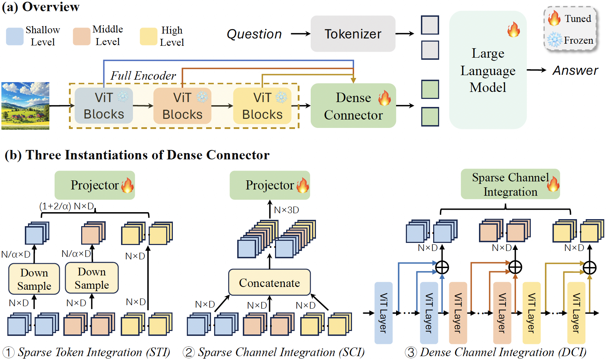
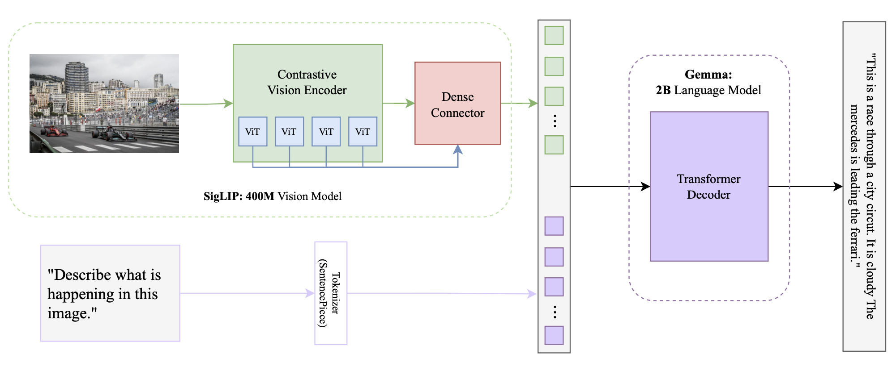

Overview
VLM-o is a 3B parameter multi-modal vision model built for image analysis and object detection. This project is an inference implementation written in PyTorch. The model is inspired by the PaliGemma architecture. The weights were originally used from HuggingFace's PaliGemma-3b-pt-224 repository and then fine-tuned using LoRA on the VQA2 dataset. In this project, I have 2 implementations, a vanilla implementation based on the PaliGemma Architecture, and one where I introduce a Dense Connector in place of the Linear Layer. This blog post won't cover all of the technical details of the model. I'd recommend the PaliGemma Paper for that (See references) . This project is mainly an implementation of that paper. This post informally describes my implementation on top of that model.
Disclaimer: This is my weekend project that already has extended to 4 days so I may revisit this when I have additional time. There is a significant room for improvement, specifically fine-tuning, and I encourage you to improve it further or write to me. For code: https://github.com/vpareek2/vlm-o
1. Initial Implementation
I initially chose this project after seeing that Umar Jamil implemented it on YouTube with a step by step guide, both coding and theory. I am pretty new when it comes to implementing ML papers, so I thought it'd be a good idea to have that as a reference. Which actually helped a lot. The initial implementation of this model took the bulk of the time in this project. I feel like most of the implementation is fairly simple. Largely all you have to do is initialize a number of pre-implemented topics, and forward through the part. Actually knowing what to put where is quite a different story. Making sure you have a good grasp of the actual concepts and how the different layers and functions work behind the scenes is very important. I'm currently doing another project in C & CUDA which is giving me a great grasp of the concepts, (albeit it is a lot more work). Anyways, I went ahead and first implemented the original model, with the processing, to the SigLip model, to the gemma model, then the inferencing. I did reference the youtube video for the rotary embeddings and the inference when I was having some trouble getting weights from huggingface to be compatible with the model. I did not originally know how precise all the model and variable names needed to be for the configs to match. I've provided a picture (below) of the model architecture. After a few bugs and logical issues, my program finally compiled and it was a fairly decent model, though primarily a prompt finishing model. I tried doing some prompting tricks but it didn't work so I realized that it would need additional fine tuning to to have a decent question answering model.

2. Next - Fine-Tuning using LoRA
From my initial implementation, I moved to Fine-tuning which took quite a bit of work because of my lack of experience with fine-tuned weights from huggingface. Also, I wanted to somehow incorporate my own implementation. Instead of simply using the online guides that tell you how to do it simply with a GUI, or using an ipynb using 10 lines of code from huggingface. For real-world purposes, this is probably the best option, but I wanted to learn new stuff while doing this so I decided to do a mix of the two. I was able to create a training pipeline leveraging HuggingFace’s Trainer() yet still using my MultiModalProcessor and dataset tools.
The fine-tuning pipeline went something like, LoRA config -> LoRA Linear Layer -> Applying LoRA -> Load Dataset & Model -> Process and apply LoRA -> Create dataset (VQAV2) PaliGemmaDataset -> Use HuggingFace Trainer() -> Save new weights.
I should probably explain LoRA quickly, if you're familiar, move onto 2.2.
2.1 LoRA (Low-Rank Adaptation)
LoRA (Low-Rank Adaptation) is a method for fine-tuning large neural networks efficiently. Instead of updating all model parameters, LoRA introduces small, low-rank matrices to adjust only specific parts of the model while freezing the rest. This reduces the computational cost and memory usage while maintaining performance. LoRA is particularly useful for adapting pre-trained models to new tasks with minimal additional training. For anyone wanting to know math:
In LoRA, you modify a weight matrix \(W\) in a neural network using low-rank matrices. Given a weight matrix \(W\) with dimensions \(d \times k\), LoRA introduces two low-rank matrices \(A\) and \(B\) where:
- \(A\) is of size \(d \times r\)
- \(B\) is of size \(r \times k\)
- \(r\) is a small rank compared to \(d\) and \(k\)
The adjusted weight matrix \(W'\) is defined as: \[W' = W + \Delta W\] where: \[\Delta W = A \cdot B\]
Here, \(\Delta W\) represents the low-rank adaptation to the original weight matrix \(W\). This approach reduces the number of parameters that need to be updated during fine-tuning, making it computationally efficient.
2.2 Fine-Tuning Results
The fine tuning had decent results. I had compute limitations, mostly because of cloud gpu costs. So I fine-tuned with my 3070 using only do 10% of the VQAv2 dataset. It did kinda well, I say kinda because it didn't give amazing responses and was really blunt. The image in Section 1 (and in my repo) is the fine-tuned model. Inputting a prompt with a photo would give me a simple one word answer every time. For example, Race, Diving, Olympic, Paris, Cloudy etc. It took the model from a descriptive prompt completion model to a blunt question answering model. I experimented with different hyperparameters and prompts, the results stayed the same.
I'm fairly certain that the results were because of limited training data. Only training on 10% of the dataset likely made the model overfit, meaning that it learned specific patterns without being able to generalize well. To be honest, the fine-tuning could be improved, but this was sort of a weekend project that extended more than it should have so I didn’t pursue it because of time and cost considerations.
3. Using Dense Connectors
3.1 What is a Dense Connector?
Brief summary of the paper (will be linked below): A dense connector is an addition to Multimodal Large Language Models (MLLMs) that addresses a common oversight in their design—the underutilization of visual encoders. While much of the recent focus in MLLM development has been on improving linguistic capabilities, the visual components are often limited to using the final high-level features from a frozen encoder. The dense connector changes this by effectively tapping into the multi-layer features generated by the visual encoder, integrating them more thoroughly into the model's decision-making process. This connector enhances the overall synergy between the visual and linguistic components of MLLMs, leading to more nuanced and accurate outputs, particularly in tasks that require a deeper understanding of visual content. (The image below is directly from their repo, which is below in refs.)

3.2 Dense Connectors in the VLM-o Architecture
Integrating the dense connector turned out to be straightforward. To be completely honest, I used Claude to look for potential areas of improvement in the overall model architecture. One main area was the linear layer after the SigLIP model. There were pros and cons to replacing this, simplicity vs. accuracy. I ended up trying to use a MLP in place, which was the first thing to come to mind, but this provided some instability with model output. Gibberish outputs. So I did some additional research, stumbled upon the paper, skimmed the paper and had Claude summarize the rest, and thought there was potential for it to be integrated. The authors were correct, it was a plug-and-play sort of thing, I only had to add 5 lines in my MultiModalProjector, change one function to output another variable, and call it in the overall SigLip model. It did not take long to integrate, thanks to some examples in their github repo.

3.3 Dense Connector Results
This is where things got interesting. The dense connector results really surprised me. First, it outputted nothing. Second, it outputted 10 periods in a row. By the way, I ran it with the same prompt 3 times, just to see if there was a difference, fyi the prompt was "What is happening in the image?". No prompting tricks or engineering at this point. The third time, it output a complete response reading "This is a race through a city circuit. It is cloudy. The mercedes is leading the ferrari". That was exactly what I wanted. Though, with more and more experimentation, it was becoming impossible to reproduce the result. I made it output something similar about the diving example but it took approximately 50 tries. The potential is there for this model to be really good.

3.3.1 Dense Connector Instability
I don't really have an exact explanation about why the dense connector is so iffy. I have a couple of theories, first is the fine-tuning. The instability in the tuning, probably stemming from 10% of the dataset, or me not implementing my own training pipeline and using the general hf trainer(),. I also think that the dense connector is probably adding too many parameters relative to the training data. The model may not have enough data to properly learn the additional params.
4. Next Steps
Lots of next steps to pursue, though I'll keep it brief. I'd say,
1. Implement training pipeline
2. Reimplement dense-connector
3. Gather/find original dataset
4. Re-pretrain with dc (need compute)
5. Re-finetune with full VQAv2 dataset (need compute)
6. Host on personal site (tried my best to do this but either wouldn't work or needed to pay).
References:
PaliGemma Paper
LoRA Paper
SigLip Paper
Attention Paper
Dense Connector Paper, and repository
YouTube Tutorial